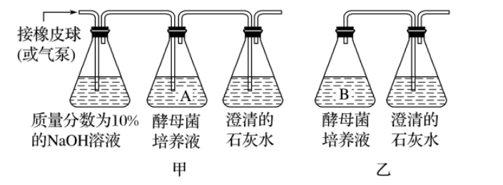
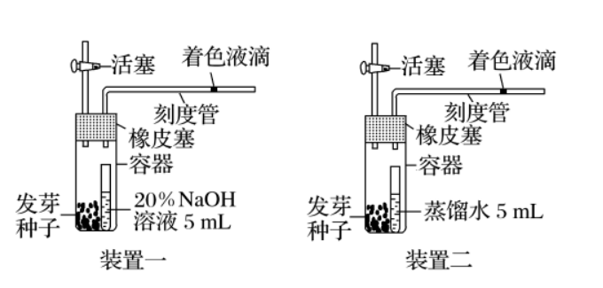

生物步步高8.ATP 和细胞呼吸
生物步步高8.ATP 和细胞呼吸
tags: Biology
-

-
A 代表 [1]腺嘌呤
-
P 代表磷酸基团
-
1 代表 [1]腺苷
-
2 代表 AMP，即 [1]腺嘌呤核糖核苷酸
-
3 代表 [1]ADP
-
4 代表 ATP
-
5 代表 [1]高能磷酸键。
一分子 ATP 中含有 3 个磷酸基团，2 个高能磷酸键，高能磷酸键水解时释放的能量多达 30.54 kJ/mol，所以说 ATP 是细胞内的一种高能磷酸化合物。
ATP分子中远离 A 的高能磷酸键容易断裂和重新形成。
ATP 合成的能量来源？
光合作用的光能。
细胞呼吸的化学能。
ATP 合成的能量去路？
储存在高能磷酸键中。
ATP 合成的反应场所？
细胞质基质、线粒体、叶绿体。
ATP 合成所需酶？
ATP 合成酶。
ATP 水解所需酶？
ATP 水解酶。
ATP 与 ADP 的互相转化不是可逆反应，为什么？
因为从物质方面来看是可逆的，从酶、进行的场所、能量的来源等方面来看是不可逆的。
-

-
植物细胞可以通过光合作用和细胞呼吸形成 ATP，而动物细胞只能通过细胞呼吸形成 ATP。
-
ATP 水解释放的能量可用于主动运输、发光发电、肌肉收缩、物质合成、大脑思考等。
判断：ATP是生命活动的直接能源物质，但它在细胞中的含量很少。
正确。
判断：ATP 不是“能量”。
正确。
高等植物叶肉细胞内 ATP 在叶绿体类囊体薄膜、细胞质基质和线粒体等部位生成。
人体内 ATP 的含量很少，但在剧烈运动时，每分钟约有 0.5 kg 的 ATP 转化为 ADP，以供运动之需，但人体内 ATP 总含量并没有太大变化，请分析原因。
ATP 与 ADP 时刻不停地发生快速相互转化，并且处于动态平衡之中。
植物、动物、细菌和真菌的细胞内，都以ATP作为能量“通货”，由此说明了什么？
生物界具有统一性。
种类繁多的生物有着共同的起源。
判断：任何活细胞都能合成 ATP.
正确。
判断：任何活细胞都会消耗 ATP.
正确。
有氧呼吸指指细胞在氧的参与下，通过多种酶的催化作用，把葡萄糖等有机物彻底氧化分解，产生二氧化碳和水，释放能量，生成**大量 ATP **的过程。
有氧呼吸第一阶段场所?
细胞质基质。
有氧呼吸第一阶段物质变化？
葡萄糖分解为还原氢和丙酮酸。
有氧呼吸第一阶段产能情况？
产生少量能量。
有氧呼吸第二阶段场所？
线粒体基质。
有氧呼吸第二阶段物质变化？
丙酮酸水解为二氧化碳和还原氢。
有氧呼吸第二阶段产能情况？
产生少量能量。
有氧呼吸第三阶段场所？
线粒体内膜。
有氧呼吸第三阶段物质变化？
还原氢和氧气生成水。
有氧呼吸第三阶段产能情况？
产生大量能量。
有氧呼吸总反应方程式？
判断：有氧呼吸产生的水的氧元素全部来自氧气。
正确。
氧元素转移图：

有氧呼吸能量转换：葡萄糖中稳定的化学能转化为** ATP 中活跃的化学能和热能**。
有氧呼吸和有机物的燃烧都是分解有机物释放能量的过程，二者有何不同？
有机物的燃烧是有机物剧烈的氧化分解释放热能的过程；
有氧呼吸是在温和的条件下进行的，有机物中的能量是逐步释放的，有一部分能量储存在 ATP中。
判断：蛋白质的合成消耗 ATP.
正确。
判断：DNA 的复制、转录都消耗 ATP.
正确。
无氧呼吸场所？
细胞质基质。
无氧呼吸第一阶段物质变化？
葡萄糖分解为丙酮酸和还原氢。
判断：有氧呼吸和无氧呼吸的第一阶段是相同。
正确。
无氧呼吸第一阶段场所？
细胞质基质。
无氧呼吸第二阶段场所？
细胞质基质。
无氧呼吸的两种物质变化？
酒精发酵：产生二氧化碳和酒精。
乳酸发酵：产生乳酸。
判断：活细胞中的线粒体往往可以定向地运动到代谢比较旺盛的部位。
正确。
细胞呼吸过程中产生的 是 还原型辅酶 I(NADH) 的简化表示方法。
在进行无氧呼吸的过程中，葡萄糖中的能量的主要去向和葡萄糖彻底氧化分解释放的能量的主要去向是什么？
葡萄糖中的能量：储存在乳酸或酒精中。
彻底氧化分解释放的能量：以热能形式散失。
判断：葡萄糖是有氧呼吸唯一能利用的物质。
错误，是最常利用的物质。
判断：没有线粒体的细胞不能有氧呼吸。
错误，例如原核生物。
判断：有氧呼吸的实质是葡萄糖在线粒体中彻底氧化分解，并且释放大量能量的过程。
错误，有氧呼吸第一阶段在细胞质基质。
判断：人体产生二氧化碳的细胞呼吸方式一定是有氧呼吸。
正确。
人无氧呼吸产生乳酸。
无氧呼吸第一阶段产能情况？
产生少量能量。
无氧呼吸第二阶段产能情况？
不产生能量。
判断：和有氧呼吸相比，无氧呼吸的两个阶段释放的能量较少。
错误，无氧呼吸第二阶段不释放能量。
判断：人体肌细胞无氧呼吸产生的乳酸，能在肝脏中再次转化为葡萄糖。
正确。
判断：过保质期的酸奶常出现涨袋现象是由于乳酸菌无氧呼吸产生的气体造成的。
错误，乳酸菌无氧呼吸不产生二氧化碳。
还有其他杂菌。
粮食储藏过程中有时会发生粮堆湿度增大现象，其原因是？
种子在有氧呼吸过程中产生了水。
不同生物无氧呼吸的产物不同，其直接原因是催化反应的酶不同，根本原因是遗传信息不同。
有氧呼吸，::=1:6:6
无氧呼吸，::=1:2:2
无氧呼吸，:=1:2
有氧呼吸哪个阶段需要氧气？
第三阶段。
有氧呼吸哪个阶段消耗水？
第二阶段。
判断：无氧呼吸全过程都在细胞质基质进行。
正确。
呼吸速率比较：生殖器官大于营养器官。
-
影响细胞呼吸速率的外界因素
-
温度
-
原理：细胞呼吸是一系列 [1]酶促 反应，温度通过影响 [1]酶的活性 从而影响细胞呼吸速率。
-
应用：储存水果、蔬菜时应当选择零上低温的温度条件进行储存。
-
-
浓度
-
原理：
-
是有氧呼吸反应物，且对无氧呼吸过程有抑制作用。
-
浓度低时，无氧呼吸占优势。
-
浓度增大，[5]无氧呼吸逐渐被抑制，[5]有氧呼吸不断加强。
-
浓度达到一定值后，有氧呼吸不再加强（受呼吸酶数量等因素限制）
-
-
应用
-
透气消毒纱布包扎伤口，抑制破伤风杆菌等厌氧细菌无氧呼吸。
-
及时松土，保证根正常呼吸。
-
提倡慢跑，防止肌细胞无氧呼吸产生乳酸。
-
稻田定期排水，抑制无氧呼吸产生 [7]酒精，防止 [7]酒精 中毒，烂根死亡。
-
-
-
浓度
-
原理： 是细胞呼吸的最终产物，积累过多会抑制细胞呼吸进行。
-
应用：在蔬菜、水果保鲜中，增加 浓度可以抑制细胞呼吸，减少有机物消耗。
-
-
含水量
-
原理：一定范围内，细胞中自由水含量越多，代谢越旺盛，细胞呼吸越强。
-
应用：粮食储存前晒干处理，目的是降低粮食中的自由水含量，降低细胞呼吸强度，减少储存时有机物的消耗。
-
-
判断：严格的无氧环境有利于水果保鲜是因为此条件下细胞呼吸分解有机物最少。
错误，不应该严格无氧环境。
严格的无氧环境，无氧呼吸会比较强。
氧气浓度在一定范围时，无氧呼吸比较弱，有氧呼吸也比较弱，两者相加是最弱的。
判断：剧烈运动时，氧气供应不足，肌细胞主要进行无氧呼吸产生乳酸。
错误。
主要进行的依然是有氧呼吸。
在保存蔬菜、水果时，应选择 生成量最低点对应的 浓度进行储存，原因是？
总 释放量最少，有机物损耗最少。
低氧环境下，有机物消耗少的原因？
地氧条件下，无氧呼吸受到抑制，强度较弱。
有氧呼吸因氧气不足，强度也比较小。
故总 释放量少，呼吸强度弱。
果蔬保鲜储藏的条件？
零上低温、低氧、较低湿度。
判断：降低温度和氧浓度并保持干燥，有利于果蔬的储藏保鲜。
错误。
干燥环境会使植物细胞缺水死亡，要保持较低湿度。
判断：大棚栽培蔬菜，遇到阴雨天气时，可适当降低温度。
正确。
阴雨天气光合作用弱，降温抑制细胞呼吸，减少有机物消耗。
干种子吸水后，自由水比例大幅增加，会导致细胞中新陈代谢速率明显加快，原因是？
从自由水作用角度考虑。
自由水是细胞内的良好溶剂；许多生物化学反应需要水的参与；水参与物质运输。
已知种子无氧呼吸产生二氧化碳，若种子萌发过程中缺氧，将导致种子萌发速度变慢甚至死亡，原因是？
无氧呼吸产生的能量不能满足生命活动所需。
无氧呼吸产生酒精对细胞有毒害作用。

溴麝香草酚蓝水溶液检验什么？现象是什么？
现象：蓝->绿->黄
酸性重铬酸钾溶液检验什么？现象是什么？
酒精。
现象：橙色->灰绿色。
检验酒精的试剂？
酸性重铬酸钾溶液，橙色变灰绿色。
-
探究酵母菌细胞呼吸的方式实验
-
实验步骤
-
配置酵母菌培养液，使用酵母菌 + 葡萄糖溶液。
-
检测 产生的多少，装置如图：
-

-
甲组有氧，乙组无氧。
-
检测酒精的产生：
-
从 A、B 中各取 2mL 酵母菌培养液的滤液，分别注入编号为 1、2 的两只试管中。
-
分别滴加 0.5mL 溶有 0.1g 重铬酸钾的浓硫酸溶液，震荡并观察溶液的颜色变化。
-
-
-
酵母菌无氧呼吸产物？
酒精和 .
判断：酵母菌在有氧条件下产生 多而快，在无氧条件下进行细胞呼吸产生酒精和 .
正确。
探究酵母菌细胞呼吸方式的实验中，无氧呼吸组要先封口放置一段时间，再连通盛有澄清石灰水的锥形瓶，原因是？
待酵母菌将瓶中氧气消耗完，确保通入澄清水的 是酵母菌无氧呼吸产生的。
-
液滴移动法探究细胞呼吸的方式
-
探究装置：欲确认某生物的细胞呼吸方式，应当设置两套实验装置，如图：
-

-
结论：
-
一不动、二不动：只进行产生乳酸的无氧呼吸或种子已经死亡
-
一不动、二右移：只进行产生酒精的无氧呼吸
-
一左移、二右移：进行有氧呼吸和产生酒精的无氧呼吸
-
一左移、二不动：只进行有氧呼吸或进行有氧呼吸和产生乳酸的无氧呼吸
-
一左移、二左移：种子有氧呼吸时，底物中除了糖类还有脂质（消耗更多氧）
-
矫正误差：为使实验精确，减少无关变量干扰，还应该设置对照装置三。<b>用煮熟的种子代替发芽种子</b>。
-
-

判断：探究酵母菌呼吸方式实验中，有氧呼吸组为实验组，无氧呼吸组为对照组。
错误，该实验为对比试验，相互对照，没有单独的对照组。
判断：大部分植物无氧呼吸产生酒精和二氧化碳。
正确。
产生乳酸的特例：马铃薯块茎、甜菜根、玉米胚。
无氧呼吸产生乳酸的生物？
动物。
少部分植物：马铃薯块茎、甜菜根、玉米胚。
乳酸菌。
ATP是细胞内的一种高能磷酸化合物。
ATP与ADP的相互转化是时刻不停地发生并且处在动态平衡之中的。
有氧呼吸的主要场所是线粒体。线粒体的 [1]内膜上 和 [1]基质中 含有许多种与有氧呼吸有关的酶。
酵母菌、乳酸菌等微生物的无氧呼吸也叫做 [1]发酵。产生酒精的叫做 [1]酒精发酵；产生乳酸的叫做 [1]乳酸发酵。
练习题补充
判断： 可以使溴麝香草酚蓝水溶液发生的颜色变化为由蓝色变成绿色。
错误，由蓝变绿再变黄。
判断：有氧呼吸和无氧呼吸过程中都产生 NADPH.
错误，产生 NADH.
判断：用 标记 ，在水中无法检测到 .
正确。
最后一步 与 生成水，不含标记同位素。
判断：酵母菌发酵生成的酒精会抑制发酵容器中微生物的生长。
正确。
判断：种子储存，要进行晒干处理，目的是降低自由水含量，降低细胞呼吸强度。
正确。
判断：乳酸菌制作酸奶，需要先通气、后密封，目的是加快乳酸菌繁殖，有利于乳酸发酵。
错误。
乳酸菌为异养厌氧型生物，在有氧条件下其代谢会受到抑制，故利用乳酸菌制作酸奶的过程中应一直处于密封状态。
判断：水果保鲜，应当低温，目的是降低酶的活性，降低细胞呼吸。
正确。
判断：栽种农作物，应当疏松土壤，目的是促进根有氧呼吸，利于吸收无机盐。
正确。
运动员为了提高运动能力，通常进行高原训练，这种训练方式主要提升有氧呼吸能力，原因是？
高原地区空气稀薄，在此处生活会刺激机体产生更多的红细胞来携带氧气，促进机体的有氧呼吸。
判断：无氧呼吸中，葡萄糖中能量的去向有三处。
正确，储存在有机物中、ATP 中、热能散失。
判断：酵母菌属于异养兼性厌氧生物。
正确。
不同氧气浓度会影响有氧呼吸和无氧呼吸。能量利用率最低点对应的氧气浓度是？
无氧气时，完全无氧呼吸，利用率最低。